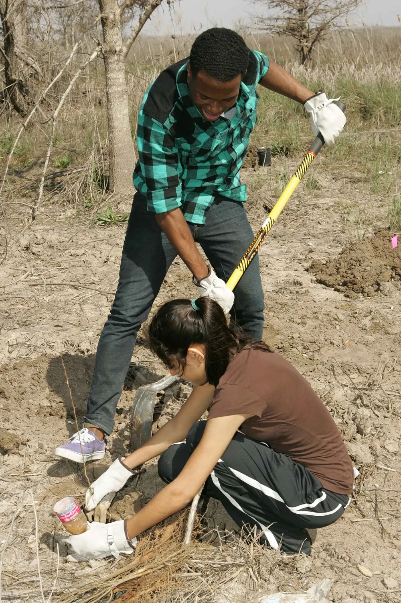
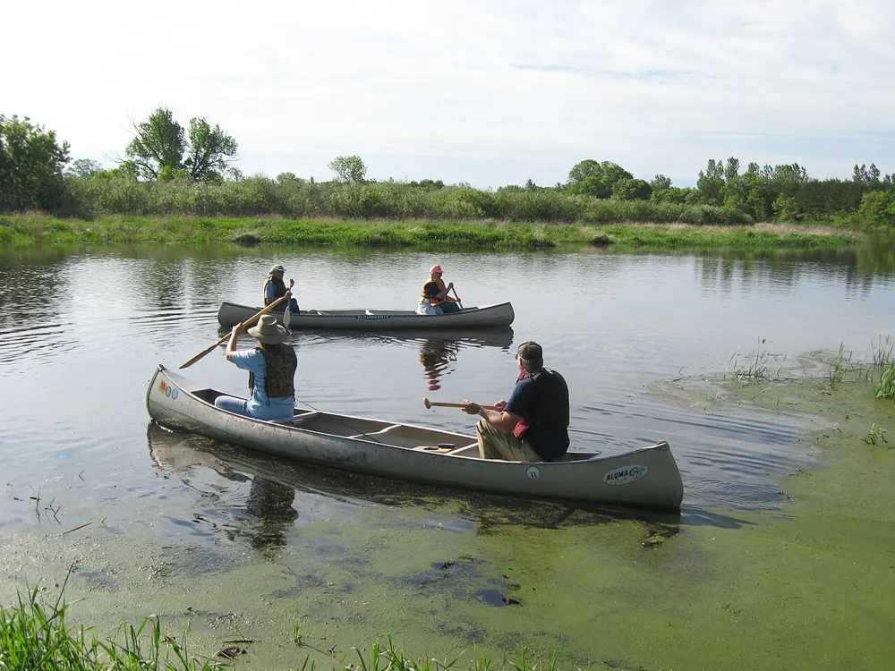
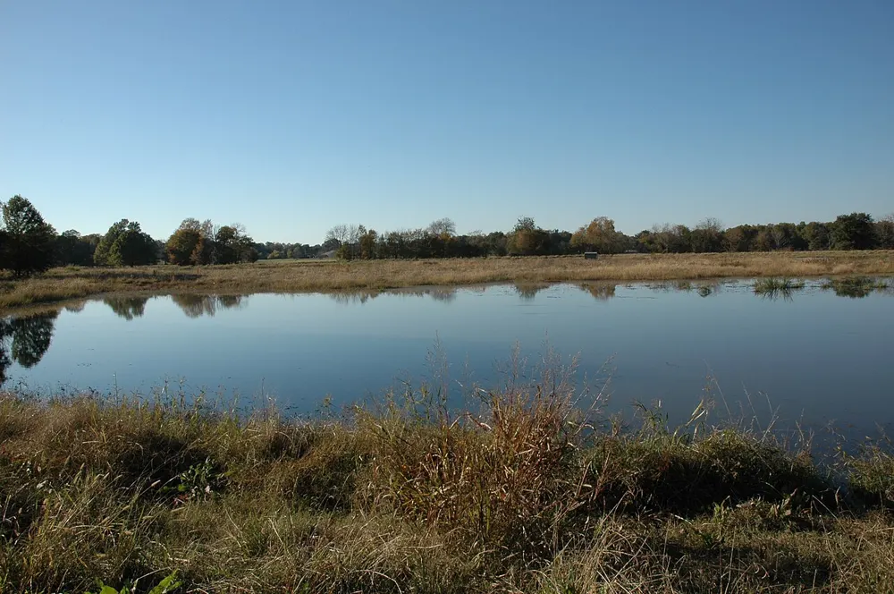
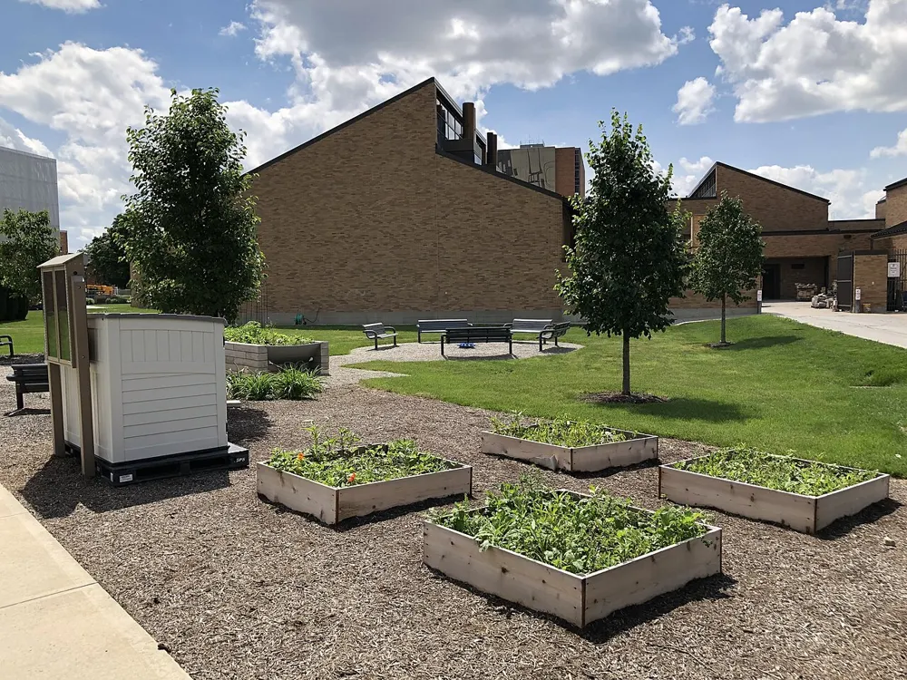

Reforestation
Neighborhood Tree Canopy
Planting native trees in underserved neighborhoods to cool streets and clean the air.
Photo: Steve Hillebrand, USFWS, public domain
Environmental nonprofit association
We restore forests, rivers and wetlands with the help of neighbors, schools and local businesses, so the next generation inherits a healthier place to live.
Photo: U.S. Forest Service, public domain
Our mission
Since our founding, we have believed that lasting environmental change starts locally. We bring people outdoors to plant, clean, monitor and learn, and we partner with businesses and public agencies to protect the places that matter most. Every dollar and every volunteer hour goes into work you can see.
Native planting and invasive species removal across parks and open space.
River cleanups and volunteer water quality monitoring.
Field days for students and workshops for families.
Our projects
A few of the programs we run year round. (Sample projects for this mockup.)

Reforestation
Planting native trees in underserved neighborhoods to cool streets and clean the air.
Photo: Steve Hillebrand, USFWS, public domain

Clean water
Monthly volunteer cleanups that pull trash and debris out of local creeks and rivers.
Photo: USFWS, public domain

Habitat
Bringing back marshland that filters water, prevents flooding and shelters wildlife.
Photo: USDA NRCS, public domain

Education
Shared gardens where students and families learn about soil, pollinators and local food.
Photo: Mbrickn, CC BY-SA 4.0
Our impact
Sample figures for this mockup, to be replaced with your real numbers.
Get involved
Join a planting, a cleanup or a monitoring crew. No experience needed, we provide gloves and tools.
See upcoming events →One short email a month with project updates and ways to help.
Donate
Choose a one-time gift or join our monthly giving circle. Monthly donors give us steady support to plan seasons of work ahead.
Your organization's tax status and EIN would appear here.
Corporate sponsorship
Sponsors fund projects and put their teams to work outdoors. Every tier includes impact reporting you can share with employees and customers. (Sample tiers.)
$1,000 / year
$5,000 / year
$15,000 / year